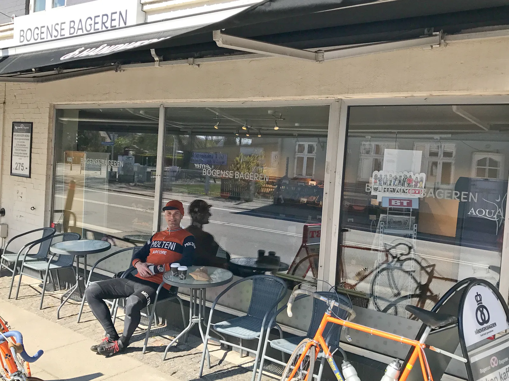

Nordfyn Rundt 2017 – Topplaceringer, styrt og scones

Det er næsten en tradition, at Squadra Molteni sætter fut i Nordfyn Rundt. Det skete også i år, hvor holdet skulle forsvare de fine resultater fra de foregående år.
Kasper, Niels, Grane og Eigil stillede alle til start på 72 km. ruten, der køres i det fantastisk flotte landskab på Nordfyn. Båring bakke er rutens frygtede punkt.
Sidste år var en brandert skyld i, at Kasper kun lige netop nåede starten 2 minutter før tid. I år er nye metoder taget i brug.
Grane havde ansvar for Eigil, så han ikke farede vild. Han hentede ham hjemme i privaten om morgenen. Kaptajn Niels Bjørnsteen tog sig personligt af Kasper, som overnattede i hjemme hos Niels, som holdt et skarpt øje med rødvinsglasset.
– Kasper og Eigil er dygtige ryttere, men de er squ svære at styre nogen gange. Eigil bliver væk og Kasper drikker sig fuld. I år skal der rettes ind, udtaler Niels.
En kontrolleret start
Starten gik forsigtigt, og der var i år ingen TV-udbrud fra kaptajnens side. Taktisk kørsel for at spare på kræfterne tidligt på sæsonen. Sol og medvind gjorde det til en fornøjelse at sidde i feltet.
Squadra Molteni placerede sig i den forreste del af det store felt. Der skulle holdes øje.
– Et par carbonraketter kører fra feltet tidligt, og hænger derude en 5-6 kilometer. Det stikker allerede i mine ben, så jeg sætter mig i front, og kører dem ind. Derefter bliver jeg sat, fortæller Grane.
Den stikkende fornemmelse i Grane ben, finder han ud af, skyldes de sikkerhedsnåle, der skal holde benvarmerne på plads. Han er kommet til at hæfte benvarmerne fast i inderlåret i stedet for cykelbukserne. Det brandærgerligt, udtaler han bagefter.
Båring bakke(rne) trak tænder ud
Før Bårring bakke var feltet samlet, og der blev kørt hårdt op over. Tempoet blev derefter skruet i vejret. De efterfølgende 10 kilometer bliver der sat pres på. Der er små veje og et par ikke ubetydelige kontrabakker.
På den sidste af de tre bakker eksploderer Kasper. Men på vej ned gennem feltet, ser han Niels, der har mælkesyren piblende ud af alle sprækker. Kasper tager en absolut sidste føring, og med et solidt skub, får han bragt Niels tilbage til førergruppen. Den er nu på kun 20 mand.
Angreb og styrt i finalen
Der bliver kørt hårdt og jævnt de sidste 35 kilometer. Feltet er samlet til finalen, og her laver Niels Bjørnsteen sit træk.
Isen i maven er smeltet, og han har gode ben. Med 3 kilometer til mål rykker han. Det skaber panik blandt carbonraketterne. Ingen havde forudset at en midaldrende mand på stål og i uld, skulle åbne finalen.
Kaptajnen skaber et lille hul, og i slipstrømmen – en sky af orange uldfibre og kæmpe turbulens – sker der et styrt. Eigil bliver fanget bag ved.
Niels bliver kørt ind, men får sig klemt ind på en 9. plads i spurten. Eigil kommer ind som nummer 12. De bliver hhv. 2 og 3 i deres aldersklasse. Se resultatlisten.
Men hvor blev Kasper og Grane af?
Kasper og Grane fandt sammen efter eksplosionen, og klappede hinanden på ryggen over hvor godt et arbejde de havde udført for deres kaptajner.
De måtte da have fortjent en kop kaffe og en scones ved den lokale bager. De tog den hurtigste vej hjem, og kunne lige nå bagerstoppet ved Bogense bageren, inden de mødtes med de andre ved målstregen.

Nordfyn Rundt blev kørt i fantastisk vejr, og der var som altid Odense dåsebajere, og klarsuppe ved målstregen.